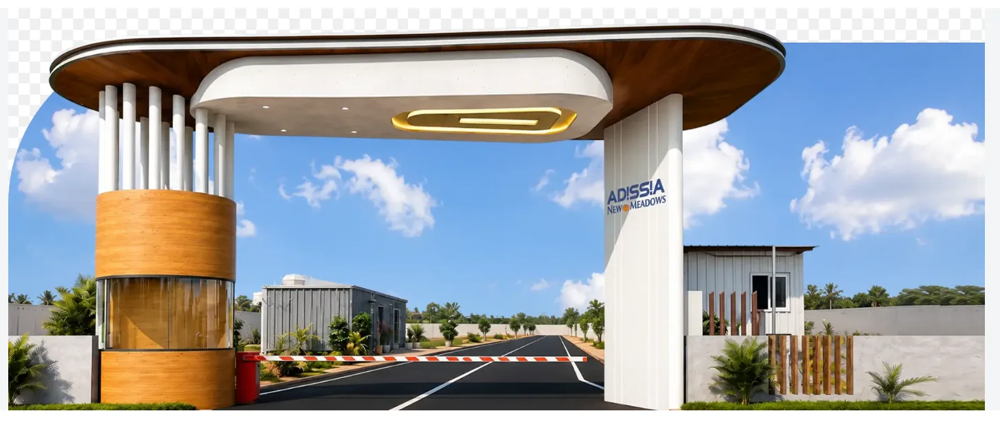

Coimbatore's airport connectivity push has moved a step forward. Construction World, the construction trade publication, reported that the district administration has completed its land survey for a new airport approach road, planned to run alongside the airport's new terminal. The proposed road is described as a 10.5-metre-wide access route linking Avinashi Road to the terminal, featuring a 40-metre main carriageway flanked by two service roads, a meaningfully wider design than a typical arterial connector. For a city whose last major road milestone, the Avinashi Road Elevated Corridor, only opened a little over a year ago, this is the latest sign that Coimbatore's infrastructure spending is continuing rather than pausing after that one headline project.
1. What Was Actually Completed
A land survey is an early, necessary step before any road construction begins, it establishes the exact alignment, the land required, and what, if anything, needs to be acquired from private owners along the route. Completing this stage for the new airport approach road means the project has moved from a stated intention to a document-backed plan with a specific design (10.5-metre carriageway width, 40-metre main road, two service roads), but it is still well short of groundbreaking. Treat this as a meaningful administrative milestone, not as construction progress you can see on the ground yet.
2. How It Connects to What's Already Built
This new road is distinct from, but connected to, Coimbatore's biggest recent infrastructure win: the 10.1 km Avinashi Road Elevated Corridor, inaugurated in October 2025 and now the state's longest flyover, running between Uppilipalayam and Goldwins. That corridor addressed a long-standing bottleneck on Avinashi Road itself. The new approach road is a more targeted addition, aimed specifically at giving the airport's new terminal a direct, wider link to that same Avinashi Road corridor, rather than relying on existing local roads to carry airport traffic. The two projects are complementary pieces of the same broader east-west connectivity story for the city.
It's also worth being candid about what hasn't been finished yet. A related widening project at the Uppilipalayam junction, part of the same broader Avinashi Road upgrade programme, reportedly had not begun construction as of the most recent available reporting, even though the stretch had already been formally handed over to the National Highways Authority of India. Commuters at that specific junction have not yet seen visible changes, and the area's subway reportedly still waterlogs during the monsoon. The lesson for buyers: different pieces of the same corridor-wide upgrade move at very different speeds, so a single completed milestone, like this survey, shouldn't be read as proof that the entire connectivity story is close to finished.
3. What It Means for Coimbatore Homebuyers
Coimbatore's residential and plotted-development market has leaned heavily on the city's growing industrial, IT and premium-housing demand, and airport connectivity is a genuine, durable part of that pitch, particularly for the city's professional and NRI buyer segments who value quick airport access. A government-backed survey for a dedicated, wider approach road is a positive directional signal for that broader thesis, even though actual construction is still ahead. For buyers evaluating plotted developments in the city, such as Adissia Regal Arch in Neelambur, which sits along the Avinashi Road corridor itself, or other plotted options like Adissia New Meadows in Kovaipudur and Godrej Plots Coimbatore opposite the Coimbatore Golf Club, the right approach is the same one that applies to any early-stage infrastructure news: track the project through its land acquisition and tendering stages before assuming a specific completion date, and don't pay a present-day premium for a road that, in the most optimistic reading, is still years from opening.
4. What a Wider, Dedicated Airport Road Could Change
Compare the proposed design, a 40-metre main carriageway flanked by two service roads, against the kind of narrower, shared local roads that currently handle traffic to many parts of the city's periphery, and the intent becomes clear: this is meant to be a dedicated, high-capacity link rather than an incremental widening of an existing lane. For residents and investors in the city's southern and eastern growth corridors, a project of this scale, once built, would meaningfully cut the uncertainty and congestion that currently attaches to airport-bound trips during peak traffic, a factor that matters disproportionately to the NRI and frequent-flyer buyer segment that Coimbatore's premium and plotted housing market increasingly targets.
5. The Bigger Picture
Taken together with the already-operational elevated corridor, the pending Uppilipalayam widening and this new approach-road survey, Coimbatore's Avinashi Road axis is clearly a sustained, multi-year government priority rather than a one-off project. That's useful context for anyone weighing a long-horizon plot purchase in the city: the corridor is getting real, continued attention, even if individual components are moving on their own, sometimes slower, timelines.
The Bottom Line
Completing the land survey for Coimbatore's new airport approach road is an early but genuine step in a broader, multi-year push to improve the city's Avinashi Road and airport connectivity. For buyers tracking Coimbatore's plotted-development market, it's worth noting and following through the coming quarters, but it sits alongside a related widening project that hasn't yet started, a reminder that this corridor's full upgrade is still a work in progress rather than a finished story. Talk to our team for a current view on Coimbatore's infrastructure-linked micro-markets.